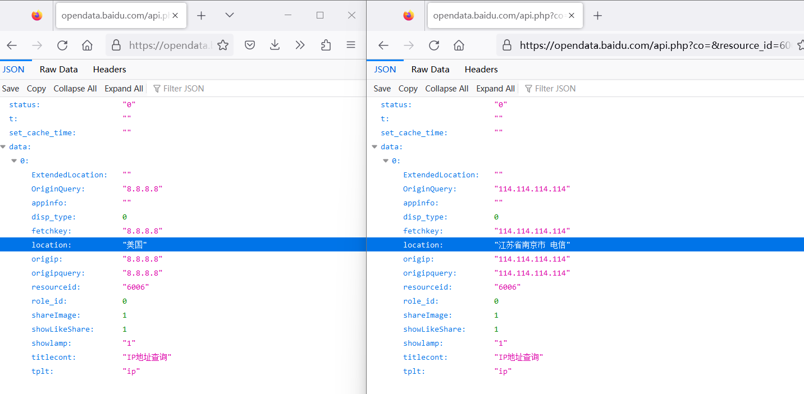
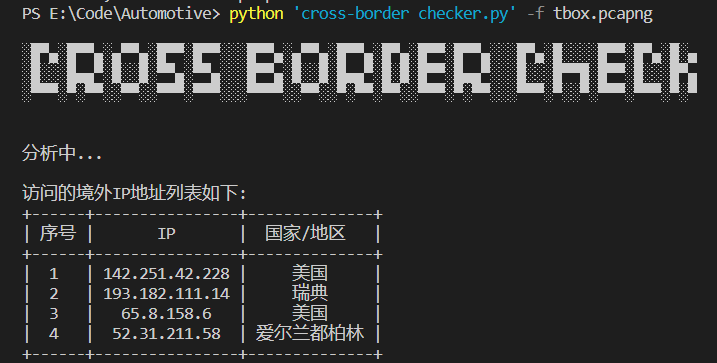

车联网安全进阶之跨境传输检测
车联网安全进阶之跨境传输检测
在车联网安全基础知识系列外，新开了一个系列 车联网安全进阶，主要分享一些车联网安全的进阶的知识，包括但不限于检测脚本编写，其他的等想好了再说🙈。
5月5日发布的《汽车整车信息安全技术要求》（征求意见稿） 在10节 车辆数据代码安全要求 中对数据跨境传输提出了要求——车辆不得直接向境外传输数据。
10.7 车辆不得直接向境外传输数据。
注： 用户使用浏览器访问境外网站、使用通信软件向境外传递消息、自主安装可能导致数据出境的第三方应用等不受本条款限制。
并在A.7.7 防数据直接出境测试方法给出了测试方法，使用抓包工具开始抓包，然后模拟测试车辆各项预装的数据传输功能，最后分析数据包中是否包含境外IP地址。
测试人员应按照如下测试方法，检验测试车辆是否满足正文10.7的要求：
a） 开启车辆全部移动蜂窝通信网络、WLAN通信网络，依次模拟测试车辆各项预装的数据传输功能
b） 使用网络数据抓包工具进行不少于3600秒的数据抓包，解析通信报文数据，分析目的IP地址中是否包含境外IP地址，并记录测试结果，应不包含境外IP地址。
标准中只说了应不包含境外IP地址，没有给出数据包的分析方法，今天和大家分享一下我采用的检测方法和脚本。
数据包抓取
不同场景下使用适合的抓包工具，如使用 tcpdump 在TBOX中抓取移动蜂窝通信网络通信数据。
1 | tcpdump -i any -w tbox.pcap |
跨境检测脚本编写
使用 Python 脚本提取出数据包中的 IP，从中过滤出公网IP，然后使用公开的接口查询 IP 地址的所在地，提取出境外的IP。
使用 scapy 提取出数据包中的公网 IP
1
2
3
4
5packets = rdpcap(pcap)
ip_list = []
for pkt in packets:
if IP in pkt:
src_ip = pkt[IP].src使用 ipaddress 过滤检测是否是公网IP地址
判断IP是否为公网IP地址，过滤掉内网地址、本地换回地址、广播地址、保留地址。
1
2
3
4
5
6
7# 检查是否公网IP，是则返回真
def is_public_ip(ip):
ip = ipaddress.ip_address(ip)
if ip.is_private or ip.is_loopback or ip.is_multicast or ip.is_reserved:
return False
else:
return True公开的接口查询 IP 地址的所在地
有很多公开的IP地址接口可以使用，这里我采用
百度数据开放平台提供的 API 查询 IP 的所在地。百度数据开放平台查询国内IP返回地址以省名/直辖市开头，国外的IP只显示国家。
根据返回地址特性，筛选出不是以省名/直辖市打头的地址，过滤出境外IP。
1
2
3
4
5
6
7
8
9
10
11# 检查IP，如果是境外IP则返回所在地址
def cross_border_addr(ip):
# 百度IP信息查询API
query_api = "https://opendata.baidu.com/api.php?co=&resource_id=6006&oe=utf8&query="
homeland = ["中国","北京","天津","河北","山西","内蒙古","辽宁","吉林","黑龙江","上海","江苏","浙江","安徽","福建","江西","山东","河南","湖北","湖南","广东","广西","海南","重庆","四川","贵州","云南","西藏","陕西","甘肃","青海","宁夏","新疆"]
response = requests.get(query_api+ip)
location = json.loads(response.content.decode())["data"][0]["location"]
if location[0:2] not in homeland:
return location
else:
return False将前面的代码组合起来，就是一个跨境检测的脚本
完整脚本见 https://github.com/delikely/Automotive-Security-Toolkit
检测脚本使用
1 | E:\Code\Automotive> python 'cross-border checker.py' -h |
使用 -f 选项指定需要分析的流量包。使用实例如下图，在tbox.pcap 中检测出了 4 个跨境的 IP地址。

注意事项
测试机接入到车辆网络中，对外通信通过TBOX传输，测试机的流量可能会污染抓取的流量，影响检测的准确性。
在查询 IP 地址的所在地中，如对数据较为敏感，则可采用私有化部署(如 rapiddns 私有化部署)的数据进行查询。